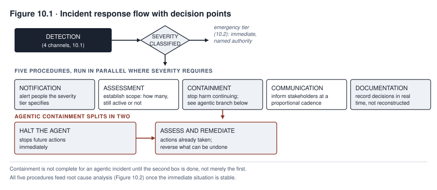
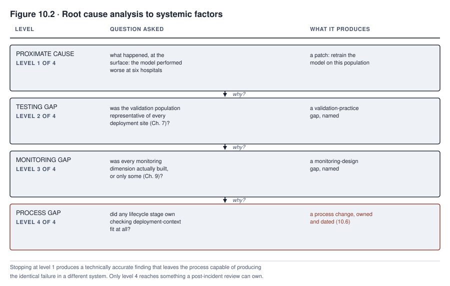

10. Incident Response and Remediation
MEDASSIST’s community hospital gap, the subject of Chapter 9’s case in focus, did not end when the retrospective chart review confirmed it. Confirmation was the beginning of a different kind of work. Someone had to decide how serious the finding was and who had the authority to act on it in the next hour, not the next committee cycle. Someone had to decide whether any regulator needed to hear about it and on what clock, and why the gap existed in a form deeper than “the model performed worse at six hospitals”. Someone also had to decide what would actually change afterward so the same pattern could not recur unnoticed for months a second time. Every one of those questions belongs to incident response, and Northfield’s answers to them, worked through in this chapter’s case in focus, determine whether the community hospital gap becomes a contained, documented, corrected episode or the first chapter of a worse one.
This chapter treats response as a discipline with its own structure, not an improvisation that begins once monitoring or a user report produces a bad enough number. A system fails; how the organization responds is a separate variable the organization actually controls, and it is the variable that determines whether a given failure remains a governance success story or becomes the harm this book’s first chapter used to make the stakes concrete.
What you will be able to do
- Identify the detection channels a monitoring program alone will not cover, and explain what each is positioned to find that designed monitoring did not anticipate
- Apply a severity classification scheme and state what response each tier triggers
- Execute the full incident response lifecycle, including the universal obligation to remedy effects already produced and the additional checks an agentic system’s lookback requires
- Identify which incidents carry a regulatory reporting obligation and on what timeline
- Conduct a root cause analysis that reaches systemic factors rather than stopping at the first proximate cause
10.1 Detection channels
An incident becomes known to an organization through one of several distinct channels, and the channel that surfaces a given incident is rarely the one a governance program was built to rely on.
Detection channels are broader than the handful a governance program tends to build first, and grouping them keeps the list usable instead of a sprawl of examples. Automated internal signals are monitoring, the subject of Chapter 9, and it catches exactly what its dimensions are built to watch, no more. Human internal reports include a frontline employee’s direct observation, the way the nurses in MEDASSIST’s case in focus noticed alert timing that felt wrong well before any aggregate number confirmed it. The category also covers internal audit, security operations, safety surveillance, and an employee escalation or whistleblower report raised through a channel built for exactly that purpose. Affected-person and customer channels are the people a system’s decisions land on, not the staff operating it, surfacing an incident through a complaint, a request for explanation, or litigation, often long after the organization’s own channels should have caught the same pattern. Supplier and partner notifications cover a vendor disclosing a problem in a purchased component or an upstream service incident propagating into the organization’s own system. Assurance activity covers what a scheduled test, audit, or evaluation turns up outside its original purpose. Regulators and legal processes surface an incident through an inquiry or a legal claim, not through anything the organization reported first. Public external discovery, a journalist or academic examining a system from outside with no obligation to notify the organization before publishing, can turn a contained internal matter into a public one on a schedule the organization does not control.
Every channel on this list needs the same operational support to actually work. It needs accessible intake that a person can find and use without specialized knowledge, a named triage owner who reviews what comes in, and correlation across channels so that a pattern several channels are separately hinting at gets recognized as one thing. It also needs acknowledgment to whoever raised the concern, protection against retaliation for raising it, and, where appropriate, feedback on what happened as a result. The organizing point is not that the channel an organization did not build is the one most likely to find the next incident. That claim has no evidence behind it. The real point is that channels an organization did not build can reveal failures that designed monitoring did not anticipate, which argues for building several instead of treating any one, including monitoring, as sufficient on its own. A governance program can be confident in its monitoring dashboard while providing no accessible channel for a nurse’s informal observation or an applicant’s complaint. That program has optimized detection for the failures it already expected. It has left every other failure mode to whichever of these other channels happens to notice first, or to none of them.
10.2 Severity classification
A severity scheme sorts an incident into a tier the moment it is identified, and the tier determines who responds, how fast, and with what authority, instead of leaving those decisions to be negotiated fresh under the time pressure each incident brings.
A workable scheme needs criteria specific enough that two different reviewers classify the same incident the same way, which rules out a scheme built only on adjectives, and it also needs to avoid the opposite failure. A rule can be too blunt in two ways. It can treat any health, safety, or fundamental-rights outcome as automatically critical regardless of scale, or it can treat an anomaly with no confirmed harm as automatically low tier regardless of how fast it is accumulating. Either version creates the same two failure modes. It will overclassify a minor, reversible event, and it will underclassify a serious near miss, an active security compromise, a large but not yet confirmed exposure, or a risk accumulating rapidly enough that waiting for confirmation would be its own mistake. The classification a severity scheme produces at the moment of detection is necessarily provisional, because the facts available at that moment are incomplete, and the scheme has to be built around that fact. It should assess actual and credible potential harm, which affected right or domain is implicated, the scale and vulnerability of the population involved, and the reversibility and duration of the harm. It should also assess how far the harm has spread geographically or across systems, whether exposure is ongoing, and how detectable the problem is. It should weigh whether a legal threshold is implicated or data has been compromised, how operationally critical the affected function is, and how much uncertainty remains in the assessment itself. Uncertainty is a reason to escalate immediately instead of waiting for it to resolve, and a provisional severity assigned under uncertainty is expected to be reclassified, upward or downward, as better evidence arrives, not treated as a one-time judgment locked in at detection.
Each severity level, once assigned, maps to a specific response time, a specific authority empowered to act, specific containment options, a specific communication obligation, a legal assessment requirement, and a review cadence. Classifying an incident is therefore, immediately, an instruction, not the start of a debate about what to do next. A scheme that sorts incidents into tiers without pre-committing each tier to this full set has built a taxonomy, not an incident response capability.
10.3 Response procedures
Once an incident is classified, a fuller lifecycle runs than the five procedures, notification, assessment, containment, communication, documentation, this chapter opened with, and naming only those five omits stages a real response cannot skip. Those missing stages include declaring the incident and assigning a named commander, protecting people and stopping active harm as its own step before broader containment, and preserving evidence before anything else changes it. They also include correcting or eradicating the active cause instead of only containing it, recovering service through a validated path, verifying that recovery actually worked, and defining a closure authority, not leaving an implicit end for when attention moves elsewhere. In sequence, the lifecycle runs as follows. The response team first receives and acknowledges the triggering signal and preserves the evidence around it; it then triages the incident, formally declares it, assigns an incident commander, and sets the provisional severity from section 10.2. Next it protects people and stops active harm, then contains the system, the data, the access, and, where relevant, the supplier path. At the same time it assesses the scope, checking whether the cause is still active, who is affected, what legal duties attach, and what communication is needed. Notification reaches the required internal and external parties on each party’s own clock, with a decision log kept throughout. Alongside that, the team corrects or eradicates the active cause and remedies prior effects for every system class, not only the agentic one. Recovery follows, through a validated system, a restricted service, or a manual fallback; it verifies that recovery worked, watches for recurrence, and updates severity and scope as new evidence arrives. Root cause analysis and post-incident review, from sections 10.5 and 10.6, run while communication and documentation continue without pausing for them to finish, and the incident closes only once the technical, human, legal, and process actions each have evidence and an owner. These stages are not strictly sequential for a severe incident, several run in parallel, and new evidence at any point loops back to update severity, scope, containment, communication, or the legal assessment rather than only feeding forward.
Containment stops the harm from continuing or spreading, and it is not a single lever to pull but a set of layered options, chosen for the specific incident and not defaulted to the same response every time. Those options include local access revocation, credential rotation, isolating a specific integration, stopping a data feed, restricting which users can reach the system, invoking a vendor’s contractual suspension right, a feature flag, a rollback to a prior version, a manual fallback process, or full shutdown. The right choice is the least disruptive option that actually controls the credible harm within the time the severity tier requires. That choice comes from comparing the harm, the uncertainty still remaining about its cause and extent, and what fallback is actually available, not from a rule that treats one system class’s containment options as inherently narrower than another’s. A purchased system’s containment is not limited to a contractual disable right just because the deploying organization does not control the vendor’s infrastructure. The deployer can typically still revoke local access, rotate its own credentials, disable its own integration, stop sending data to the system, or restrict which of its own users can reach it. An organization should confirm which of these options actually exist, and on what timeline, before an incident makes the question urgent. That is part of building the containment capability, not an afterthought once the vendor relationship becomes the bottleneck. A generative system’s containment is not automatically better served by narrowing what it can generate than by a fuller restriction. Which containment choice is correct again depends on the harm, the uncertainty, and the available fallback. A policy that treats continued availability as the default worth protecting, without a documented comparison against the credible harm, has made that tradeoff by default rather than by decision.
For every system class, not only the agentic one, containing future harm is a different question from remedying harm already done, and a response that stops at the first without addressing the second has not finished the job. A predictive decision that wrongly denied an applicant, a generative output that disclosed sensitive data or published false content, and an agentic action all leave effects that persist after the system itself has been contained. Each needs its own lookback, notification, correction, recourse, or remedy for whoever was affected while the system was misbehaving. An agentic incident carries additional checks specific to its own record, tool actions taken, transactions initiated, commitments made, messages sent, state changes recorded, and any downstream automation the agent’s actions triggered. Each of these needs its own assessment of whether it can be reversed, and a compensating action where it cannot. The underlying discipline, that stopping future behavior is not the same task as addressing past effects, applies across every system class this book covers, not only to the one where the point is easiest to see. TALENTSCREEN’s scheduling agent, caught by the action volume anomaly in Chapter 9’s case in focus, illustrates the point directly. Halting the agent the moment the anomaly was confirmed stopped it from scheduling further interviews through the broader calendar access it should never have had. But it left open the separate question of what to do about every interview already scheduled through that access, some of which needed to be reviewed, and in a few cases unwound, before the response could be considered complete.
Communication keeps affected parties, whether internal stakeholders, regulators, or the people harmed, informed at a cadence and level of detail proportional to the severity tier. This is distinct from any regulatory notification, which has its own legal form and timeline. Documentation records what was known, when, and what was decided, in real time, not reconstructed afterward, because a reconstruction written after the fact tends to describe the response the organization wishes it had run rather than the one it actually did.
Decision authority under time pressure is the procedural detail most incident plans get wrong by omission. A plan that names a response but not a specific person or role empowered to invoke it at three in the morning has not actually built a response capability, only a description of one that depends on improvised authority exactly when improvisation is least reliable. The severity scheme’s job, from section 10.2, is to have already answered the authority question before any specific incident makes it urgent.

Read Figure 10.1 as a ten-stage lifecycle with two timeline branches, standard and emergency, both gated by the same severity decision point, not as five boxes with a single emergency path. New evidence at any stage loops back to update severity, scope, containment, communication, or the legal assessment instead of flowing in one direction only. The correct-or-eradicate-and-remedy stage applies to every system class; the agentic-specific checks, tool actions, transactions, commitments, messages, state changes, and downstream automations, are additional detail within that same universal stage, not evidence that only an agentic incident needs to look backward at what already happened.
TALENTSCREEN’s scheduling agent, caught by the action volume anomaly in Chapter 9’s case in focus, illustrates the agentic containment obligation directly. Halting the agent the moment the anomaly was confirmed stopped it from scheduling further interviews through the broader calendar access it should never have had. But it left open the separate question of what to do about every interview already scheduled through that access, some of which needed to be reviewed, and in a few cases unwound, before containment could be considered complete. A response plan that treated halting the agent as the end of containment would have closed the incident while several of its consequences were still live.
The buy path adds a specific option to confirm in advance, not a specific limitation to assume. TALENTSCREEN is licensed rather than built, and Calloway does not control the infrastructure the agent runs on, so a full shutdown may require invoking a contractual right to disable functionality instead of simply flipping a switch Calloway itself owns. That does not mean the vendor holds the only lever; Calloway’s own local access revocation, credential rotation, and integration isolation remain available regardless of what the contract says about a full disable. A response plan for a purchased system needs to know, before an incident, which of the layered containment options it actually controls itself and which depend on the vendor, on what timeline, not discovering the answer while the incident is already underway. That confirmation should also cover evidence access, log retention, and the vendor’s contractual duty to cooperate with the organization’s own investigation, since a disable right alone does not establish what happened or satisfy a reporting obligation.
A generative system’s containment has the same full range of layered options as any other system class, and which one is right is a judgment about the incident’s harm, uncertainty, and available fallback, not a rule that generative incidents default to narrowing over shutdown. A generative incident is often a pattern of bad outputs rather than a single confirmed decision, so restricting capability, disabling a specific feature, or routing outputs through mandatory human review is frequently sufficient and less disruptive than a full disable. But where the credible harm is severe enough, or too uncertain to bound with a narrower control, shutting the capability down entirely is the correct choice, and the framework should not be read as discouraging it.
10.4 Regulatory reporting
A reporting decision depends on the applicable date before it depends on anything else. Checked against the EU AI Act text current on 2026-09-12, the AI Omnibus Regulation, in force since 27 July 2026, moved the Act’s own high-risk timetable back. The obligations tied to Annex III high-risk systems, the category most of this book’s examples fall into, now apply from 2 December 2027. The obligations tied to Annex I high-risk product systems now apply from 2 August 2028. A team building its reporting workflow today is preparing for a duty that has not yet started for most systems, not meeting one already in force.
Once that date arrives, a serious incident is not simply a bad outcome. Article 3(49) defines it as an incident or malfunction that leads, directly or indirectly, to death or serious harm to a person’s health, serious and irreversible disruption to critical infrastructure, infringement of Union law protecting fundamental rights, or serious harm to property or the environment. Severity, from section 10.2, and this legal test are separate decisions; an incident can demand the organization’s most urgent internal response without meeting Article 3(49), and one that meets it still needs the response section 10.3 describes.
For high-risk AI systems placed on the Union market, Article 73 places the serious-incident reporting duty primarily on providers, not on deployers generally, and Article 26 places a separate set of notification and suspension duties on deployers. The recipient is the market surveillance authority in the state where the incident occurred. The general outer limit for initial notification is fifteen days after the provider becomes aware of the incident, subject to the Article’s own causal-link wording connecting the incident to the system. That outer limit shortens to two days for a widespread infringement or the specified serious disruption of critical infrastructure, and extends to ten days where the incident involves a death. Reports are due immediately within whichever of these limits applies, not at the end of an investigation, and an initial report that is incomplete may, and should, be supplemented as the investigation progresses, not held back until it is complete. Article 73 also specifies that a provider should not alter the system in a way that could affect a later evaluation of the incident’s cause before informing the competent authorities. This means containment and correction, both discussed above, have to be sequenced with this reporting duty in mind, not run as though the two were independent. The organization’s own classification, its actual role for the specific system, and any implementing rule issued since 2026-09-12 still need verification for each real event rather than assumed from this general statement.
This ordering matters because it inverts the intuition a first-time incident responder often brings to the situation. The instinct to finish investigating before saying anything is precisely backward when the obligation is to notify promptly and then supplement the notification as the investigation progresses. An organization that waits for a complete picture before making its first report has typically already missed the deadline for that first report. A compliance program is not ready to meet this clock unless it has already identified, in advance, which of its systems could trigger this obligation and which role it holds for each one. It also needs a working internal escalation path to the person authorized to file the notification, since a clock the organization does not control leaves no time to build one after the fact.
MEDASSIST’s community hospital gap required this assessment directly. Northfield’s incident team had to determine, quickly and under the same time pressure the rest of the response operated under, which role it actually held for MEDASSIST at each of the seven hospitals, whether provider, deployer, or both for different parts of the system. The team then had to determine whether the gap met Article 3(49)’s definition of a reportable serious incident given that role, a determination this chapter’s case in focus works through as a documented legal assessment rather than a foregone conclusion.
10.5 Root cause analysis
Root cause analysis begins after the immediate response has stabilized the situation, and its purpose is to reach systemic factors instead of stopping at the first proximate cause an investigation happens to find. The proximate cause produces a patch, while the systemic factors produce the process change that prevents the next incident of the same shape. Reaching those factors is analytical work, not a predetermined chain of four boxes connected by “why” arrows that assumes in advance that each gap caused the next one in a single line. A testing gap, a monitoring gap, and a process gap are more honestly treated as parallel contributing conditions under a broader governance failure until the evidence actually shows one causing another. A method is not analysis if it starts with the answer already chosen, with no evidence collection, no competing hypothesis, and no consideration of organizational pressure, human factors, a supplier’s role, or which specific control failed. It is narration.
A causal analysis map replaces the forced ladder with seven steps that keep the investigation honest about what it actually knows. First, build a verified timeline and separate facts from assumptions and from genuine unknowns. Second, identify the harm itself, what triggered it, the active mechanism that produced it, and which controls failed or were missing. Third, examine contributing factors across every plausible category, data, model, software, workflow, people, organization, supplier, environment, and governance, not the one or two categories that come to mind first. Fourth, test competing causal explanations against the evidence and the counterevidence, instead of accepting the first explanation that fits. Fifth, identify where a control should have prevented, detected, limited, or helped recover from the event, since a missing control is itself a finding distinct from the event it failed to catch. Sixth, assign corrective actions to the specific causal factors they address, prioritize them, and state the uncertainty that remains instead of presenting the analysis as more conclusive than the evidence supports. Seventh, validate that a correction actually worked and watch for recurrence, since a corrective action that was never checked is a claim, not a result.
Applied to MEDASSIST’s gap, this method does not conclude that a testing gap caused a monitoring gap which caused a process gap in a single chain; it more plausibly finds three parallel contributing factors under one governance failure. The validation population was drawn overwhelmingly from the academic center, a sampling decision nobody flagged as a limitation at the time, which Chapter 7’s testing did not catch. The monitoring program tracked only the technical and aggregate-performance dimensions and never built the human-oversight dimension that would have caught the diverging dismissal rates months sooner, which Chapter 9’s monitoring did not catch. No stage of the lifecycle, from testing through deployment through monitoring, assigned anyone the responsibility of checking that a validation population’s composition matched the population the system would actually serve once deployed across seven distinct sites. That is the process gap that let the other two coexist undetected. Labeling any one of these three “the root cause” would overstate what the evidence supports; the honest finding is that all three were contributing factors, and the corrective actions have to address all three, not whichever one is easiest to fix first. A root cause analysis that stops at “the model needs retraining” has produced a technically accurate finding that will not prevent the next system from repeating exactly the same failure through exactly the same process gap.

Read Figure 10.2 as a map built from evidence, not a ladder assumed in advance. The seven steps run in the order listed, but the output is a set of tested contributing factors, not a single traced chain. MEDASSIST’s case populates the map with three factors sitting in parallel under one governance failure, not one causing the next. Those three factors are a testing gap, a monitoring gap, and a process gap that let both persist undetected. Each factor gets its own corrective action; none of the three is labeled the root cause on its own, because the evidence supports all three as contributing rather than any one as sufficient by itself.
10.6 Post-incident review
A post-incident review converts root cause findings into process change with tracked ownership, and the distinction between a review that produces this and one that produces only a report matters more than it sounds.
A complete post-incident record covers more ground than owner, change, date, and verification alone. It also covers the impact actually caused, a timeline of what happened, how the incident was detected, and how the response and communication actually unfolded. It covers the contributing factors from section 10.5’s causal map, the assumptions the investigation made and where they might be wrong, what went well during the response, what went poorly, and, honestly, where luck rather than the response itself limited how bad the harm became. It preserves the evidence the investigation relied on, states the priority of each corrective action, and defines how the action’s effectiveness will actually be measured, not only whether it was implemented. It also specifies how recurrence will be monitored afterward, states who else in the organization needs to see the findings, and names the criteria that would reopen the review, a recurrence, new harm, or new evidence that invalidates the original analysis. Each finding from section 10.5 needs an assigned owner, a specific change, and a date by which the change is verified as actually implemented, not merely proposed. Accountability for the action has to stay separate from personal blame for the incident, since a review that functions as a blame exercise will get less honest information the next time something goes wrong. A finding without an owner is a sentence in a document that nobody is accountable for acting on. A governance function can treat a well-written post-incident report as the deliverable instead of treating the subsequent process change as the deliverable. If it does, it will accumulate a library of accurate diagnoses next to an unchanged set of processes. An action closes only once it has been implemented and shown, with evidence, to actually be effective, not when a tracking ticket is marked complete. The review should also verify that the fix addresses the systemic factors, not only the proximate cause. A review that closes MEDASSIST’s incident by confirming the model was retrained, without confirming that the validation and monitoring process changes section 10.5 identified were actually implemented and shown to work, has closed the incident without closing the gap that produced it.
Case in focus: an incident worked end to end
MEDASSIST · Hypothetical, following the running cases
The retrospective chart review that surfaced Northfield’s community hospital gap arrived on a Thursday afternoon, and the first decision the newly assembled incident team had to make was severity. The gap involved a health-safety outcome, delayed sepsis alerts, across six of seven hospitals. Under Northfield’s severity scheme, that outcome classified as a critical incident regardless of how many specific patients had been affected. It triggered immediate executive notification and a cross-functional response inside the four-hour window the scheme specified, not the more measured, business-day response a lower tier would have permitted.
Response ran several procedures in parallel instead of in sequence. Containment was worked as a decision requiring clinical-safety, operational, and legal evidence, not a default reached by elimination. The team compared suspension of the alerting function, restriction to a subset of use cases, recalibration of thresholds, switching to an alternative validated tool, an enhanced protocol without changing the model, and a manual fallback process, weighing each against harm, uncertainty, and available capacity. Northfield’s clinical safety officer, not the incident team alone, made the final call, choosing a defined reduced-confidence mode, an explicitly specified higher alert threshold paired with a mandatory, time-bound nurse review of every borderline case, over suspension. The documented basis was that removing automated screening at six hospitals carried its own credible safety risk, one the assessment judged larger than the risk the reduced-confidence mode still carried once workload capacity at each site was checked against the added review burden it created. The decision record specified the affected sites, the expected duration, the staffing capacity confirmed to support the added review load, explicit success and halt criteria, a patient-communication plan where required, and a monitoring commitment specifically watching for the alert-fatigue signal section 9.8 describes. Adding manual review at exactly the sites already showing elevated dismissal rates was a plausible way to make that specific problem worse, not better, if left unmonitored. Assessment, run concurrently, worked to establish how many patients across the six hospitals had experienced a delayed or missed alert during the affected period. The task was complicated by exactly the intervention-affected truth problem Chapter 9 described, since a prevented deterioration leaves no confirmed case. The team had to rely on the same retrospective chart-review method that surfaced the gap in the first place, now applied fully instead of as a sample, evaluating the process and the available evidence rather than claiming to reconstruct each patient’s individual counterfactual. Communication reached hospital leadership and clinical staff at all seven sites within the same day, with a level of technical detail calibrated to what each audience needed to act on, not a single message sent everywhere unchanged. Documentation captured each decision and its timestamp as the response unfolded, producing a record the post-incident review would later rely on instead of a reconstruction assembled afterward from memory.
This hypothetical assumes MEDASSIST’s Annex III obligations are already in force, since section 10.4’s applicable date has to be reached before Article 73’s clock can start. Regulatory reporting required its own determination, run by Northfield’s compliance lead in parallel with the clinical response, and the determination itself, not just its outcome, is what the incident record preserves. The compliance lead first documented Northfield’s role for MEDASSIST at each hospital. The academic medical center’s original validation work made a provider determination plausible for some functions, while the community-hospital deployment made Northfield a deployer for others, and the applicable duties depend on getting that role right, not assumed. Two branches were then assessed against Article 3(49)’s definition, using the facts already established by the sample-based retrospective review that had surfaced the gap, delayed and missed alerts tied to a confirmed pattern of health harm across multiple sites. That assessment ran even though the full chart review the response’s own assessment procedure was still running had not yet finished. If the facts already in hand met the definition’s threshold for Northfield’s provider-side obligations, an initial report would go to the competent authority within the applicable outer limit, explicitly incomplete and flagged for supplementation once the full review concluded. If they did not clearly meet it, the assessment would instead be recorded as a documented decision that Article 73 reporting did not apply, alongside confirmation that sector-specific health reporting obligations and any contractual notification duties to the community hospitals were still being completed regardless. Northfield’s compliance lead concluded the first branch applied on the facts available and filed within the window instead of waiting for the full review to complete. The record kept both the reasoning and the branch not taken, so a later reviewer can see why the determination went the way it did rather than only the conclusion it reached.
Root cause analysis, beginning once the immediate response stabilized, first used Chapter 3’s system-to-model link to confirm which model version each hospital was actually running, ruling out a version mismatch before the analysis went further. It then followed the same three questions this chapter’s section 10.5 develops, tracing the confirmed performance gap back through the validation population’s composition and the monitoring program’s missing human-oversight dimension. Both traced to a lifecycle-wide absence of any checkpoint verifying that a validation population matched its eventual deployment context. The post-incident review that followed assigned two owners. The clinical informatics director was responsible for building a representativeness check into every future validation before Chapter 7’s testing sign-off. The operations lead was responsible for adding the human-oversight monitoring dimension Chapter 9 specifies to every deployed clinical model within a fixed quarter, with both changes tracked to specific verification dates instead of left as recommendations in a closed file.
The incident closed not when the retrained model shipped, but when both process owners confirmed their changes were implemented and verified, the distinction section 10.6 draws between an incident that produces a corrected model and one that produces a corrected process.
Summary
Detection arrives through automated internal signals, human internal reports, affected-person and customer channels, supplier and partner notifications, assurance activity, regulators and legal processes, and public external discovery. A channel an organization did not build can reveal failures that designed monitoring did not anticipate, which argues for building several accessible, triaged, and correlated channels instead of trusting any one of them alone. A workable severity scheme assigns a provisional tier from a stated multi-factor assessment, escalating under uncertainty instead of waiting for certainty. It also pre-commits each tier to a specific response, authority, containment options, communication obligation, legal assessment, and review cadence, so that classification is an instruction, not the start of a negotiation under time pressure.
Response runs a full incident lifecycle, not five isolated procedures, from declaration and command through protection, containment, assessment, notification, correction, recovery, verification, root cause analysis, and closure, with feedback loops carrying new evidence back to severity, scope, containment, communication, and legal assessment throughout. Containment is a layered set of options chosen for the specific incident’s harm, uncertainty, and available fallback, available in some form to every system class and every acquisition path. Correcting the active cause and remedying prior effects is a universal step, not one specific to agentic systems, though an agentic incident adds its own checks for actions, transactions, commitments, and downstream automations already taken. Regulatory reporting depends first on which role, provider or deployer, an organization holds for a given system. It attaches to a defined seriousness threshold with different outer limits by consequence, and starts its clock at awareness, not at the conclusion of investigation, inverting the instinct to finish investigating before reporting anything. A provider is barred from altering the system in a way that would affect a later cause evaluation before informing authorities.
Root cause analysis builds a causal map from verified evidence instead of assuming a predetermined chain. Multiple contributing factors, a testing gap, a monitoring gap, a process gap, can sit in parallel under one governance failure, not one causing the next in a single line. A post-incident review converts those findings into owned, dated, verified process changes, kept separate from personal blame, and an incident is not closed when the immediate technical fix ships but when the process changes that prevent its recurrence are confirmed, with evidence, as actually effective.
Review questions
COMPREHENSION
Explain why a governance program built entirely around its monitoring dashboard is structurally likely to miss some incidents, and name two other detection channels from section 10.1 and what each is positioned to catch that monitoring is not built to anticipate.
Explain why correcting the active cause and remedying prior effects is a universal step for every system class, not an agentic-specific one, and state the additional checks an agentic incident’s lookback needs beyond what a predictive or generative incident’s lookback needs.
APPLIED
Design a three-tier severity scheme for a generative customer-support system, specifying the criteria for each tier and the response each tier triggers.
A serious incident’s initial investigation will take three weeks to complete, but the regulatory reporting clock requires notification within days of awareness. Describe what the initial notification should contain given this timing mismatch.
SPOT THE RISK
- A post-incident review concludes with a retrained model and a report describing the root cause in detail, but assigns no owner or verification date to any process change. Identify what is missing and why the incident should not be considered closed.
COMPARE AND DECIDE
- A root cause analysis reaches two candidate systemic factors. They are a testing gap and a monitoring gap. State the case for addressing both simultaneously versus prioritizing one first, and what would determine which is more urgent.
RUNNING CASE
MEDASSISTUsing the case in focus, explain why Northfield’s compliance lead filed an initial regulatory report before the full chart review was complete, and what the supplemental report was expected to add.
Part II applied one incident lifecycle to predictive, generative, and agentic systems alike, already following TALENTSCREEN’s scheduling agent through that same lifecycle in this chapter’s own case in focus. Chapter 11 and Chapter 12 now each take up one of the two capabilities this book has tracked throughout, generation and autonomous action, and develop the controls specific to each. Chapter 11 takes up generation first, beginning with why a system that produces open-ended content needs controls the shared lifecycle does not by itself supply.